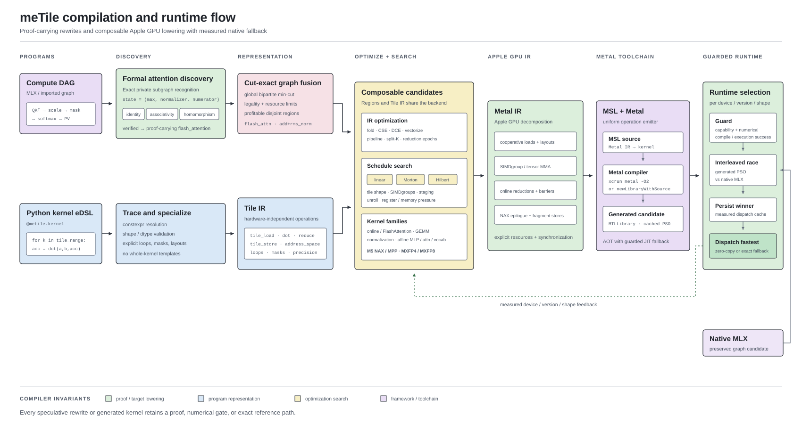
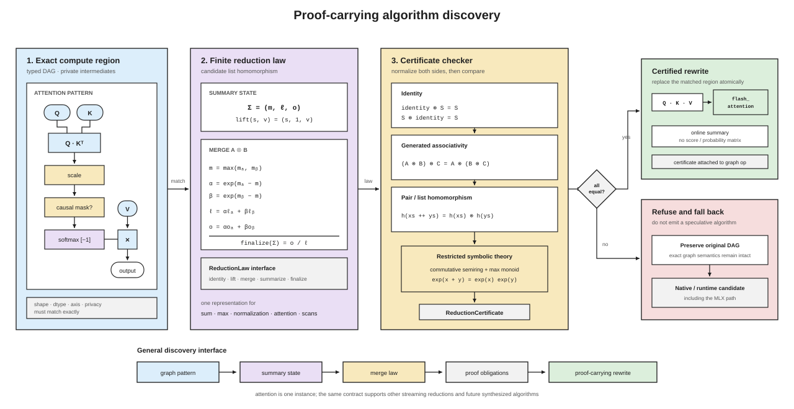

Compiler Architecture¶
meTile separates algorithm choice, kernel-local transformation, target lowering, and runtime dispatch. A high-level graph may discover a different algorithm or kernel boundary, while the Python eDSL remains the composable source of generated GPU work. Native framework operations stay available as measured runtime candidates.
{kind=link}

Frontends and Graph Planning¶
There are two compiler entry paths:
@metile.kerneltraces ordinary Python eDSL operations into kernel-local Tile IR.GraphBuilderrecords a typed compute DAG before kernel boundaries have been selected. The graph can come from an MLX integration or from an explicit compiler client.
The graph path first runs semantic discovery. It recognizes exact private subgraphs such as query/key matmul, scale or causal mask, softmax, and value matmul. A rewrite must carry a verified reduction certificate. Legal fusion neighborhoods use exact max-flow/min-cut models that account for launches, materialized intermediates, and target resources. The compiler also solves every bipartite region-conflict component globally through a weighted min-cut; arbitrary non-bipartite set-packing components retain a deterministic legal fallback. Each selected region eventually lowers through the same composable kernel machinery as a directly written eDSL kernel.
Proof-Carrying Discovery¶
Algorithm discovery is built around reusable reduction laws rather than an attention-specific source template.
{kind=link}

ReductionLaw defines an identity, a binary merge, a singleton lift, and a
finalization expression. The restricted equational checker verifies left and
right identity, generated associativity cases, and pair/list homomorphism. The
weighted-softmax law summarizes a stream with (maximum, normalizer,
numerator); only a verified law may replace the materialized attention chain
with flash_attention. Escaping intermediates, incompatible shapes, an
unsupported reduction axis, or a failed obligation preserve the original graph.
Kernel Compilation¶
Tile IR contains hardware-independent loads, stores, loops, reductions, layouts, and matrix operations. Compiler passes expose target-independent structure before lowering. Static schedules are canonicalized under the finite symmetry group that is legal for the concrete kernel shape; equivalent orbit members are not searched twice. Candidate scalar schedule programs are extracted by a target operation-cost model with a compressed-description-length tie break.
Lowering produces explicit Metal IR primitives: scalar and SIMD operations,
threadgroup storage, simdgroup matrix fragments, Metal 4 tensor_ops, block
scales, barriers, and multi-output stores. Decomposition and optimization passes
remain ordinary IR-to-IR transformations. The uniform emitter walks Metal IR to
produce MSL, then the runtime uses the offline Metal toolchain when available and
falls back to supported JIT compilation paths.
Guarded Runtime¶
Compilation generates candidates; it does not assume that generated code beats the framework for every device and shape.

Native MLX and generated kernels enter the same selector. Generated results must first pass a numerical compatibility gate. Order-interleaved provisional and finalist rounds measure the surviving candidates, and framework switches require explicit headroom: 5 percent for isolated primitives and 10 percent for graph or quantized-MLP boundaries. Decisions persist by device, toolchain or framework version, source, dtype, shape, launch grid, and candidate family. A cached native decision deoptimizes directly to the original operation; a generated decision uses zero-copy MLX custom kernels or prepared Metal dispatch with resource-safe batching.
This boundary is deliberately conservative. Correctness rejection, unsupported features, compilation failure, or an inconclusive tournament all retain the native path instead of attributing a fallback to meTile.